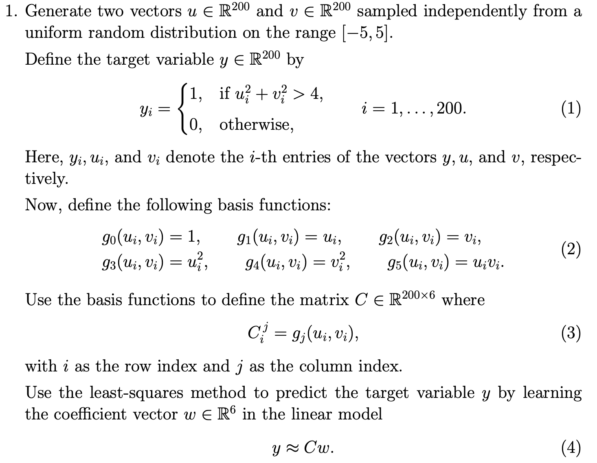
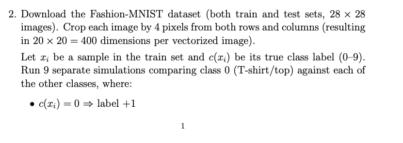
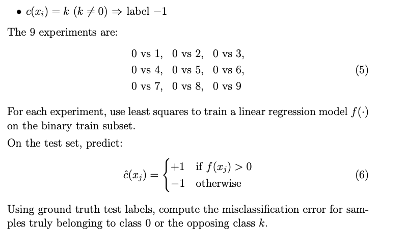
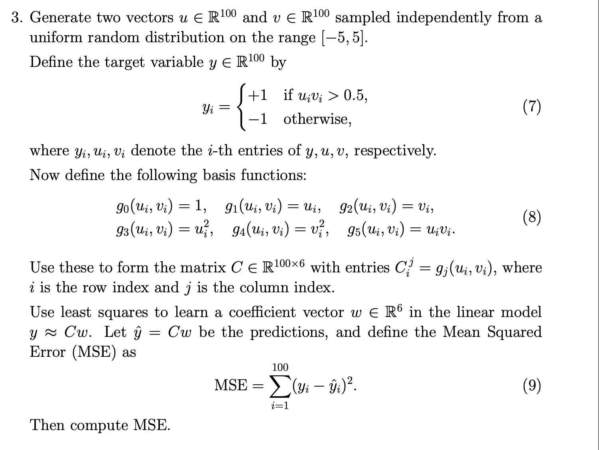
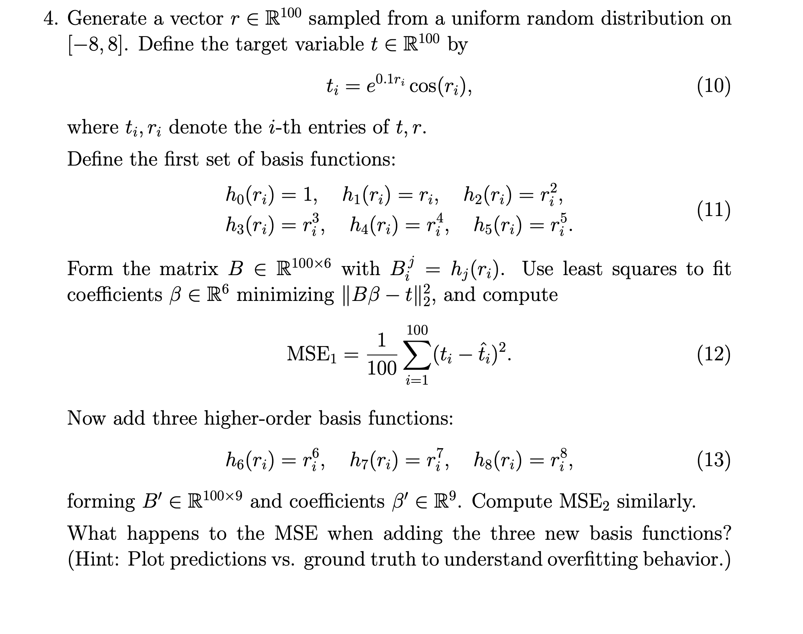

Code
import numpy as np
u = np.random.uniform(-5, 5, 200)
v = np.random.uniform(-5, 5, 200)Constraints: Using only
numpyfor calculations andmatplotlibfor visualizations

import numpy as np
u = np.random.uniform(-5, 5, 200)
v = np.random.uniform(-5, 5, 200)Now, the target variable \(y \in \mathbb{R}^{200}\) as defined:
y = np.where(u**2 + v**2 > 4, 1, 0)Given basis functions: \(g_0(u_i, v_i) = 1\), \(g_1(u_i, v_i) = u_i\), \(g_2(u_i, v_i) = v_i\), \(g_3(u_i, v_i) = {u_i}^{2}\), \(g_4(u_i, v_i) = {v_i}^{2}\), \(g_5(u_i, v_i) = v_iu_i\)
def g1(ui, vi):
return 1
def g2(ui, vi):
return ui
def g3(ui, vi):
return vi
def g4(ui, vi):
return ui**2
def g5(ui, vi):
return vi**2
def g6(ui, vi):
return ui*vi
basis_func = {
0: g1,
1: g2,
2: g3,
3: g4,
4: g5,
5: g6
}c = np.zeros((200, 6))
for i in range(200):
for j in range(6):
c[i][j] = basis_func.get(j, lambda u,v: None)(u[i], v[i])the model for this problem is:
\(\tilde{y}(u, v) = \sum_{i=0}^{5} w_ig_i(u,v)\) = \(w_0 + w_1u + w_2v + w_3u^2 + w_4v^2 + w_5uv\)
That is, \(\mathbf{y} = C\mathbf{w}\)
to use least squares method, define: \(E(\mathbf{w}) = \frac{1}{2}\sum_{i=1}^{200}(y_i - \tilde{y}_i)^2\)
Now, our main goal is to minimize \(E(\mathbf{w})\).
to get \(\tilde{w}\) we solve the least squares problem \(\min_{w} \lVert \mathbf{y}-C\mathbf{w} \rVert^2\)
w = np.linalg.lstsq(c, y, rcond=None)[0]
print("Weights: ")
for i, val in enumerate(w):
print(i+1, val)Weights:
1 0.4846750300466607
2 -0.009941268182366401
3 0.0033882565136917303
4 0.02288945851253361
5 0.0226348317092476
6 0.002323395376739553The target set and basis functions used here trained the model \(\tilde{y}\) to predict whether a point (u, v) lies outside the circle of radius ‘2’ or not (defined by the target condition: \(u^2 + v^2 > 4\)). So, now we should be able to predict this using the approximated weights \(\tilde{w}\).
def pred(u, v, w):
features = np.array([1,u,v,u**2,v**2,u*v])
y_hat = features @ w # dot product of given surface with w
return y_hat
TEST_SIZE = 100
MAX_PRINT = 10
u_test = np.random.uniform(-5, 5, TEST_SIZE)
v_test = np.random.uniform(-5, 5, TEST_SIZE)
print("TESTING on random uniform test with size: ", TEST_SIZE )
correct = 0
threshold = np.mean(y)
for i in range(TEST_SIZE):
y_hat = pred(u_test[i], v_test[i], w)
prediction = 1 if y_hat > threshold else 0
t = 1 if u_test[i]**2 + v_test[i]**2 > 4 else 0
if prediction == t:
correct += 1
if i < MAX_PRINT:
print(f"({u_test[i]:.2f}, {v_test[i]:.2f}) => model: {prediction} truth: {t}")
elif i == MAX_PRINT:
print("...")
print(f"points outside the circle in training data: {threshold}%") # shows skewness in the random training dataset
print(f"accuracy: {(correct/TEST_SIZE)*100}%")TESTING on random uniform test with size: 100
(1.41, 3.34) => model: 0 truth: 1
(-3.75, -1.72) => model: 1 truth: 1
(0.59, 2.65) => model: 0 truth: 1
(4.78, -3.13) => model: 1 truth: 1
(2.43, -4.72) => model: 1 truth: 1
(-1.14, 2.92) => model: 0 truth: 1
(-4.11, -3.85) => model: 1 truth: 1
(4.82, 2.53) => model: 1 truth: 1
(3.85, 4.71) => model: 1 truth: 1
(0.32, -2.01) => model: 0 truth: 1
...
points outside the circle in training data: 0.84%
accuracy: 67.0%Note: Since the dataset is not balanced (i.e., the proportion of class 1 labels is significantly higher than that of class 0), a threshold of 0.5 is not appropriate. As the model is obtained via least-squares regression and produces continuous outputs, a decision threshold is required for classification. In this case, we use the empirical mean of the training labels as the threshold to account for the class imbalance.


using keras datasets for clean mnist import to avoid messy mnist_reader util files (alternative way was to use zalando’s mnist_reader util)
from tensorflow.keras.datasets import fashion_mnist
(x_train, y_train), (x_test, y_test) = fashion_mnist.load_data()To reduce dimensionality and remove irrelevant border pixels, we crop image from \(28 \times 28\) to \(20 \times 20\):
x_train = x_train[:, 4:24, 4:24]
x_test = x_test[:, 4:24, 4:24]Each image is flattened into a feature vector:
x_train = x_train.reshape(len(x_train), -1)
x_test = x_test.reshape(len(x_test), -1)
# normalize pixel values to [0,1] to improve numerical stability of least squares
x_train = x_train / 255.0
x_test = x_test / 255.0First, we define a helper function to extract only the relevant classes (0 and k) and relabel them:
# Helper function to filter out x, y sets into two label classes 0 and k
def get_binary(x ,y, k):
mask = (y==0) | (y==k)
x_bin = x[mask]
y_bin = y[mask]
y_bin = np.where(y_bin == 0, 1, -1);
return x_bin, y_binWe model the prediction as: \(\tilde{y}=\mathbf{w}^T\mathbf{x} + b\) , where \(b\) is the bias term.
To incorporate the bias term, we augment the feature matrix with a column of ones. The opimal weight \(\tilde{w}\) are obtained by solving the equation:
\(\min_{\mathbf{w}}|X\mathbf{w}-y|^2\)
Using the Moore-Penrose pseudoinverse (built-in in numpy):
def train_ls(X, y):
X = np.c_[np.ones(X.shape[0]), X] # add bias
w = np.linalg.pinv(X) @ y # best fit line using pseudoinverse
return wPredictions are made using the sign of the model output:
def predict(X, w):
X = np.c_[np.ones(X.shape[0]), X]
return np.where(X @ w > 0, 1, -1)We use the misclassification error defined as: \(\text{Error} = \frac{1}{N}\sum_{i=1}^{N}\mathbb{1}(y_i\neq\hat{y}_i)\)
def misclassification_error(y_true, y_pred):
return np.mean(y_true != y_pred)Training and evaluating the model for each \(k \in {1,\dots, 9}\):
results = {}
for k in range(1, 10):
X_train_k, y_train_k = get_binary(x_train, y_train, k)
w = train_ls(X_train_k, y_train_k)
X_test_k, y_test_k = get_binary(x_test, y_test, k)
y_pred = predict(X_test_k, w)
error = misclassification_error(y_test_k, y_pred)
results[k] = error
print(f"0 vs {k} => error: {error:.4f}")0 vs 1 => error: 0.0205
0 vs 2 => error: 0.0515
0 vs 3 => error: 0.0730
0 vs 4 => error: 0.0300
0 vs 5 => error: 0.0050
0 vs 6 => error: 0.1750
0 vs 7 => error: 0.0005
0 vs 8 => error: 0.0400
0 vs 9 => error: 0.0025This experiment highlights how well a linear model trained via least squares can separate different classes in a high-dimensional image space.
Key observations:
Despite its simplicity, this approach provides a useful baseline before moving to more expressive models like logistic regression or neural networks.

Our goal is to find MSE for the target variable \(y\in\mathbb{R}^{100}\) given by:
\(y_i = \begin{cases}+1 & \text{if} u_iv_i>0.5\\ -1 & \text{otherwise}\end{cases}\)
i.e. a prediction model to show if a point (u,v) \(\in\) {set of points outside hyprbola \(\text{uv} = 0.5\) for \(u\in\mathbf{u}, v\in\mathbf{v}\)}
The dataset for training is random points sampled independently from the uniform distribution of points in a square of side length 5.
Q3_SAMPLE_SIZE = 100
u = np.random.uniform(-5, 5, Q3_SAMPLE_SIZE)
v = np.random.uniform(-5, 5, Q3_SAMPLE_SIZE)and the target variable \(\mathbf{y}\) is:
y = np.where(u*v > 0.5, 1, -1)c = np.zeros((Q3_SAMPLE_SIZE, 6))
# using the basis function dictionary defined in Q1
for i in range(Q3_SAMPLE_SIZE):
for j in range(6):
c[i][j] = basis_func.get(j, lambda u,v: None)(u[i], v[i])The optimal weights \(\mathbf{w}\) such that \(\mathbb{C}\mathbf{w} \approx \mathbf{y}\) is calculated as:
w = np.linalg.lstsq(c, y, rcond=None)[0]
print("weights: ")
for i, val in enumerate(w):
print(f"{i} => {val}")weights:
0 => -0.37370260897474644
1 => -0.020925216046665467
2 => 0.0006273455312409893
3 => 0.024961502610929987
4 => 0.007132089729049421
5 => 0.09692434752703956Here, we have \(\hat{y}=\mathbb{C}\mathbf{w}\) and MSE is given by:
\(\text{MSE } = \sum_{i=1}^{100}(y_i - \hat{y}_i)^2\)
y_hat = c @ w
mse = np.sum((y-y_hat)**2)
print(f"mse = {mse:.5f}, mean: {np.mean((y-y_hat)**2)}")mse = 36.77674, mean: 0.367767379141112
Python code:
np.linalg.lstsq(A, b, rcond=None) => solves the matrix linear equation directly: \(A\mathbf{x} = b\)np.where(<condition>, <val_T>, <val_F>) => allowed me to construct np vectors directly using conditionsInference of problems:
Question 1:
Question 2: